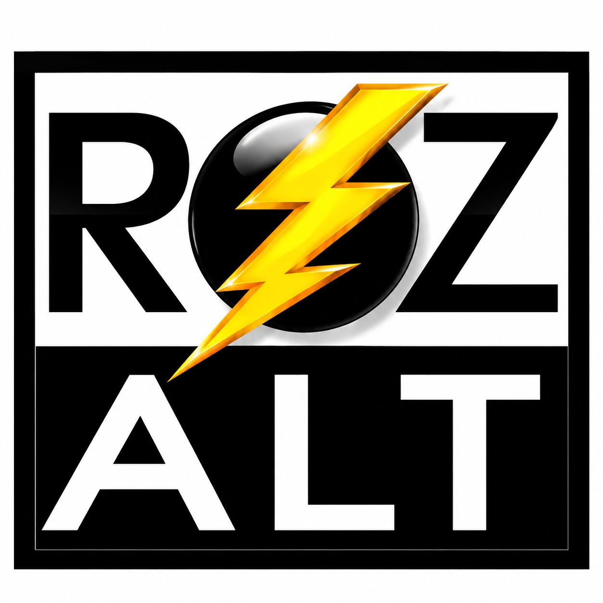

⚡ Rozruszniki i alternatory
Zajmujemy się nimi od 2012 roku!
- montaż i demontaż
- naprawa i regeneracja
- diagnostyka i sprawdzanie podzespołów
- wymiana uszkodzonych elementów
- dobór części i fachowe doradztwo

ROZ-ALT to doświadczenie, fachowa wiedza i kompleksowa obsługa – rozruszniki i alternatory samochodowe oraz skutery wodne BRP Sea-Doo.
Zajmujemy się nimi od 2012 roku!
Kompleksowa obsługa skuterów wodnych – regularny serwis, diagnostyka oraz usuwanie usterek.
Dzięki diagnostyce komputerowej możemy dokładniej zlokalizować przyczynę problemu i sprawdzić pracę poszczególnych układów skutera.